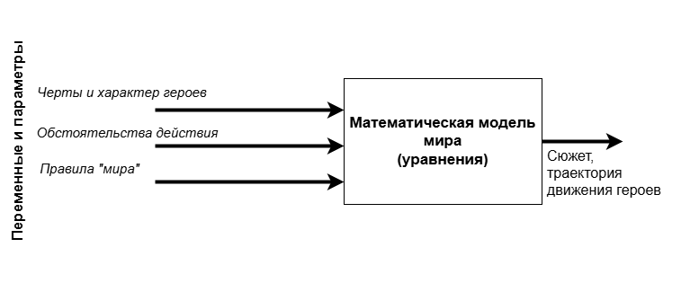
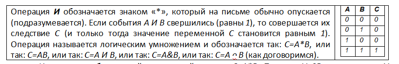
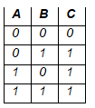
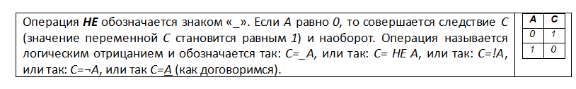
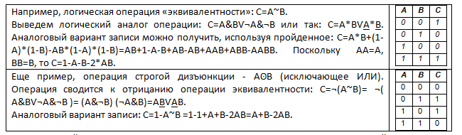
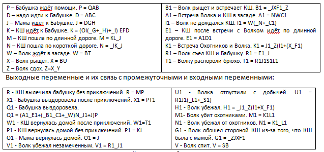
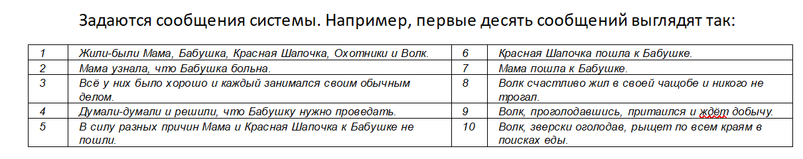
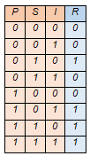
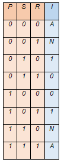

Пример 6. Модель текста
Литературное произведение – взаимодействие героев и, как следствие, развертывание сюжета. В зависимости
от характера героев, обстоятельств, среды развитие повествования идёт определённым образом. В любом
случае, читая книгу, мы наблюдаем один из вариантов развития истории, как представлял себе его автор.
Литературное произведение – есть факт, данные, на которые мы повлиять не можем.
В театре появляется возможность импровизировать. Каждый актер привносит что-то новое в портрет и
поведение героя, которого он играет, исходя из собственного опыта. Особенно часто меняет акценты пьесы
режиссёр, ставящий спектакль. Литературное произведение начинает испытывать вариацию. Ход пьесы
меняется.
Однако, ситуацию можно поменять кардинально. Если изменить характер или черты его героев, сменить
обстоятельства их жизни, то сюжет может пойти совсем другим путем. В различных обстоятельствах одни и те
же люди ведут себя по-разному. В одних и тех же обстоятельствах разные люди ведут себя по-разному.
Например, трусливый персонаж изменит течение произведения, ход событий в отличие от героической
личности.
Чтобы исследовать, как влияют на сюжет характеры героев, правила принятой в обществе морали, роль
обстоятельств, авторам следует описывать не конкретные данные, а составлять модель, представлять не
конкретное решение, а логику принятия решений. Это путь, которым идут IT-специалисты, составляя модели
миров, в которых происходит дальнейшее развитие компьютерных игр в зависимости от того, какие Вы
принимаете воздействия на созданный мир, каковы характеры героев, каковы особенности окружающего мира.
Модель в этом случае представляет собой математическую конструкцию, которая в зависимости от изменяющихся
значений входных переменных, параметров рассчитывает заново своё поведение, значения выходных
переменных, решение, траекторию поведения в новых обстоятельствах.

Польза такого подхода состоит в том, что, исследуя изменения известного сюжета для разных условий, можно
лучше уяснить к каким последствиям ведут те или иные правила, установленные в обществе, чем чреваты те
или иные черты укоренившегося в нас характера. Множество траекторий изменившегося
сюжета начинают давать пищу для размышлений о свойствах систем, порождающих эти
траектории.
Так постепенно в реальной жизни, на множестве чужих и своих конкретных примеров, мы учимся вести себя
правильно, что формирует характер человека. Множество конкретных примеров разных людей
формирует мораль – свод правил общественной жизни, позволяющих достичь общих целей,
которые не достижимы в одиночку, быть полезными друг другу, обеспечить сохранность рода.
Подобным образом составляют сценарии развития экономики, военных действий, развития
городов и регионов, предотвращения катастроф, действий толпы в местах массового скопления людей,
движения социальных процессов и так далее.
Состав и структура систем определяют их свойства. Поэтому надо спроектировать структуру
системы так, чтобы её поведение удовлетворяло задуманным нами характеристикам в большинстве возможных
случаев и случайных обстоятельств.
Имея модель, можно решать на ней разные задачи, искать лучшие варианты развития.
Отвечать на интересующие нас вопросы:
- можно ли выиграть сражение, при каких условиях это возможно,
- каких и сколько надо добавить ресурсов, чтобы достичь результат,
- чем управлять, чтобы кардинально изменить ситуацию,
- как изменить правила, чтобы сэкономить ресурсы для достижения одной и той же цели,
- что является ключевым фактором выигрыша (проигрыша) и так далее.
Чтобы понять, как создаётся и используется модель, составим её для сказки «Красная
Шапочка». Определим роли: КШ (здесь и далее Красная Шапочка), Бабушка,
Мама, Охотники, Волк.
Выделим из текста входные переменные: Q - Высокие жизненные силы
Бабушки; O – Для Мамы Бабушка важнее КШ; A - Бабушка больна;
L - КШ рассудительна; G - Мама свободна от дел; H -
Мама здорова; E - КШ здорова; F - КШ свободна; C – КШ
испытывает ответственность за старших; J1 - Охотники вышли на охоту;
L1 - Охотники суровы; S1 - Охотники искусны; I - Лес
опасен; B - Жили-были; T - Волк немного голоден; C1 -
Волк терпелив; F1 - Волк везучий; Y - Волк волевой;
D1 - Волк хитрее КШ; U - Волк очень голоден; S - Волк
не голоден.
Выделим выходные переменные: R - КШ вылечила бабушку без приключений;
X1 - Бабушка выздоровела после приключений; Q1 - Бабушка выздоровела;
W1 - КШ вернулась домой после приключений; P1 - КШ вернулась домой без
приключений; O1 - Мама вернулась домой; V1 - Волк убежал незамеченным;
U1 - Волка отпустили с добычей; H1 - Волк убежал; M1-
Волк убит охотниками; N1 - Волк убежал от охотников; G1 - Волк обошел
стороной КШ из-за того, что КШ была с мамой; V - Волк спит.
Договоримся, что переменные могут принимать значения 0 или 1. Логично подразумевать при таком
кодировании, что 1 означает свершение факта (активацию переменной), 0 означает обратное. Итак,
переменные означают события.
Для связи входных и выходных переменных нам нужны операции с ними. Используем операции:
И (логическое умножение), ИЛИ (логическое сложение),
НЕ (логическое отрицание). Их называют базовыми.

Известен алгебраический аналог этой записи: С=А*В. Пример, V=SB означает, что V наступает тогда, когда
наступает как S, так и В.
Операция ИЛИ обозначается знаком «+». Если А ИЛИ В имеет место (то есть хотя бы один из них или оба
вместе равны 1), то совершается их следствие С (значение переменной С становится равной 1). Операция
называется логическим сложением и обозначается так: С=А+В, или так: С=А ИЛИ В, или так: С=АѴВ, или
так: С=АᴗВ (как договоримся).

Известен алгебраический аналог этой записи: С=А+В-А*В. (Подставьте числа 0 и 1 в формулу и проверьте).
Алгебраическая запись от логической отличается тем, что разрешает подставлять в формулу вместо
переменных не только значения 0 и 1, но и любые другие в интервале от 0 до 1. Пример, F=R+T означает,
что F наступает тогда, когда наступит хотя бы одно из событий R или T, или оба вместе.

Известен алгебраический аналог этой записи: С=1-А. Пример, P=_Y означает, что Р наступает тогда, когда не
наступило Y. Если Y наступило (то есть Y = 1), то событие P не наступило (значение P = 0). Остальные
логические операции могут быть выведены из этих (с использованием этих) трёх базовых.

Первой в сложном выражении выполняется операция отрицания, второй - умножения, третьей - сложения.
Порядок операций можно изменять с помощью скобок. Из описания сказки можно установить некоторые
причинно-следственные отношения, которые записываются так: Следствие = f(Причины), где f – скобочное
составное выражение, функция. Промежуточные переменные, связывающие входные переменные с выходными:

Например, одно из отношений сказки «Бабушка ждёт помощи, ЕСЛИ у нее высокие жизненные силы И она больна И
она существует» запишется с помощью переменной-следствия «P – Бабушка ждёт помощи» так: P = QAB, где Q -
высокие жизненные силы Бабушки, A - бабушка больна, B - жили-были. В алгебраическом виде отношение
принимает вид уравнения: P=Q*A*B.
Ещё пример, N1 - Волк убежал от охотников: N1 = K1_L1, где K1 – Встреча Охотников и Волка, L1 - Охотники
суровы. То есть Волк убежал от Охотников, ЕСЛИ Волк встретился с Охотниками И НЕ верно, что Охотники
были суровы.
В свою очередь запись K1 = J1_Z(I1+(X_F1)), говорит нам о том, что Встреча Волка и Охотников состоится,
ЕСЛИ Охотники вышли на охоту И НЕ верно, что Волк сдох И (либо Волк НЕ дождался КШ, ЛИБО (Волк рыщет И
НЕ Волк везучий)). Здесь K1 – встреча Охотников и Волка, Z – Волк сдох, X – Волк рыщет, I1 – Волк не
дождался КШ, J1 - Охотники вышли на охоту, F1 - Волк везучий.
Примечание. В алгебраическом
виде отношение принимает вид уравнения пятой степени:
K1 = J1*(1-Z)*(I1+X*(1-F1) - I1*X*(1-F1)). Открывая скобки, получим: K1 = (J1- J1*Z) * (I1+ X - X*F1 -
I1*X + I1*X*F1) или K1 = J1* (I1+X - X*F1 - I1*X + I1*X*F1) - J1*Z*(I1+X - X*F1 - I1*X + I1*X*F1) или K1
= J1*I1+J1*X-J1*X*F1-J1* I1*X + J1*I1*X*F1 - J1*Z*I1 - J1*Z*X + J1*Z*X*F1 + J1*Z*I1*X - J1*Z*I1*X*F1.

для чего строят модели? Для того, чтобы получать по ним новые, ранее неизвестные или неочевидные
сведения. Чтобы получить такие сведения, надо решить задачу – найти неизвестное по известным величинам.
Чтобы решить задачу, надо: к модели поставить вопрос, сообщить дополнительные условия, описывающие
ситуацию, и вычислить ответ. Как решают задачу? Задача решается преобразованием уравнений модели так,
чтобы неизвестная величина была выражена через известные в задаче величины. Преобразования формы модели
должны быть обязательно эквивалентными, чтобы суть модели в процессе этих преобразований не изменилась.
Это достигается использованием проверенных надёжных законов алгебры. В нашем случае «алгебры логики».
Цели использования моделей обычно две: - спрогнозировать реакцию системы (выяснить значения выходных
переменных) при заданных нами значениях входных переменных (задача прогнозирования), - понять, как нам
управлять входными переменными, чтобы обеспечить желаемые значения выходных переменных (задача
управления). То есть определить, при каких наших воздействиях на систему будет достигнута желаемая нами
её реакция.
Первая цель соответствует вопросу: «что будет, если …» (прямая задача). Вход задан, выход - неизвестен.
Вторая цель: «что надо сделать, чтобы обеспечить …» (обратная задача). Выход задан, вход – неизвестен.
То есть на модели решают две основные задачи – прямую и обратную.
Прямая задача состоит в том, чтобы предсказать события.
Например, что будет, ЕСЛИ (Бабушка больна) И (Высокие жизненные силы Бабушки) И (Лес опасен) И (Мама
здорова) И (Мама свободна от дел) И (Ответственность за старших) И (Жили-были) И (Волк не голоден).
Посылая на модель R = IO(_G + _H) ABCQEFL +_I ABCQEFL входные сигналы:
Q, O, A, L, G, H, E, F, C, J1,
L1, S1, I, B, T, C1, F1, Y, D1, U, S = 1, 0, 1, 0, 1, 1, 0, 0, 1, 0, 0, 0, 1, 1, 0, 0, 0, 0, 0, 0, 1,
последовательно подставляя числовые значения переменных и вычисляя значения операций, получим:
операций, получим: R = IO( _G+ _H) ABCQEFL + _I ABCQEFL = 1 * 1 * (_1 + _1) * 1 * 1 * 1 * 1 * 0 * 0 * 0 + _0 * 1 * 1 * 1 * 1 * 0 * 0 * 0 =
1 * 1 * (0 + 0) * 1 * 1 * 1 * 1 * 0 * 0 * 0 + 1 * 1 * 1 * 1 * 1 * 0 * 0 * 0 = 0 + 0 = 0.
Продолжая аналогично вычислять значения всех выходных переменных модели, получаем ответ модели на выходе:
R, X1, Q1, W1, P1, O1, V1, U1, H1, M1, N1, G1, V = 0, 0, 1, 0, 0, 1, 0, 0, 0, 0, 0, 0, 1, что означает
Q1(Бабушка выздоровела) И O1(Мама вернулась домой) И V(Волк спит).
Решим обратную задачу. Пусть известно, что R=1«КШ вылечила Бабушку» и нас интересует I «Опасен ли лес?».
Формально задача имеет вид триады (гипотеза, вопрос, модель):
Допустим, R=1
(гипотеза)
_________
I=?
(вопрос)
Решение задачи (способ 1, аналитический). R = IO(_G+_H) ABCQEFL +_I ABCQEFL (используем модель)
1.
Подставляем известные величины в модель: 1 = (IO(_G+_H)+_I) ABCQEFL
2. Лес опасен (I=1), если
выполняется выражение: 1 = (1O(_G+_H)+0) ABCQEFL, то есть 1 = (O(_G+_H)) ABCQEFL
3. Так как для АВ = 1,
надо (А = 1) И (В = 1), то A = 1,B = 1,C = 1,Q = 1,E = 1,F = 1,L = 1,O = 1,R = 1, (G = 0)ИЛИ(H = 0)
4. Лес не опасен (I = 0),
если выполняется выражение: 1 = (0O(_G+_H)+1) ABCQEFL, то есть 1 = (0+1) ABCQEFL, или 1 = (1) ABCQEFL,
или 1 = ABCQEFL
5. Так как для АВ = 1, надо (А = 1) И (В = 1), то A = 1, B = 1, C = 1, Q = 1, E = 1, F = 1, L = 1, R = 1
Выписываем ответ:
I = 0, если ((A = 1) И (B = 1) И (C = 1) И (Q = 1) И (E = 1) И (F = 1) И (L = 1) И (R = 1) И
(G = 1) И (H = 1)), I = 1, если ((A = 1) И (B = 1) И (C = 1) И (Q = 1) И (E = 1) И (F = 1) И (L = 1) И (O = 1) И ((G = 0) ИЛИ
(H = 0)) И (R = 1)).
Формально ответ выглядит так: I = ABCQEFLO(_G+_H)R. На языке сказки это означает, что «Лес опасен» тогда,
когда одновременно выполняются следующие условия:
– А: Бабушка больна (это заставляет идти помогать ей и рисковать)
– В: Жили-были все персонажи (мир сказки существует, все актеры на своих местах)
– С: Ответственность за старших имеет место (серьёзный мотив, чтобы идти на помощь, даже если ты
маленькая девочка)
– Q: Высокие жизненные силы Бабушки (идти имело смысл, так как Бабушка дотерпит до момента оказания ей
помощи)
– Е: КШ здорова (и может пойти через лес)
– F: КШ свободна (и имеет возможность пойти через лес к Бабушке)
– L: КШ рассудительна (это заставило её рисковать и добиться успеха R=1)
– O: Бабушка важнее КШ (коли так, то стоит идти и рисковать)
– H: Мама не здорова (Мама идти не может, а маленьким девочкам лес опасен; если бы Мама была и здорова, и
свободна, то она бы пошла сама в лес, который для взрослых не опасен)
– G: Мама не свободна (Мама идти не может, а маленьким девочкам лес опасен; если бы Мама была и здорова,
и свободна, то она бы пошла сама в лес, который для взрослых не опасен)
– R: КШ вылечила Бабушку (так как смогла пойти, была рассудительна, Бабушка дождалась, хотя и была больна
и т.д.)
Решение задачи (способ 2, численный)
Ищем зависимость R = f(I) и обратную к ней I = g(R), поэтому в модели R = IO(_G+_H) ABCQEFL + _I ABCQEFL
обозначим типовые цепочки при I буквами: P = O(_G+_H) ABCQEFL, S = ABCQEFL.
Получаем выражение относительно переменных R и I: R = IP + _IS
Для модели составим таблицу истинности, перебирая все возможные варианты значений входных переменных
{I,P,S} и вычисляя R подстановкой их в выражение исходной модели.

Переформатируем предыдущую таблицу,
перегруппировав столбцы и строки так, чтобы R стало входной переменной, а I - выходной.

Отметим, что пара наборов входных значений осталась недоопределена, так как таких комбинаций в исходных
данных не встречалось (обозначено как N).
Появились также две строки, помеченные как А (абсурд), так как {P,S,R} = {1,1,1} приводит к I = 0 и I = 1
в строках 7 и 8 исходной таблицы. То же самое произошло для строк 1 и 2.
Такие случаи надо оговаривать специально дополнительно и отдельно. Например, так — пусть будет «Лес
опасен» в любом случае, даже непонятном (А = 1).
Тогда в виде логического выражения таблица будет записана так: I = _P_S_R + _PS_R + P_SR + PSR.
Приведем три правила перевода таблиц данных в буквенные выражения:
1. Формула получена выписыванием всех строк таблицы, для которых I = 1 через операцию ИЛИ.
2. Все переменные одной строки упоминаются через операцию И.
3. В строке, если переменная равна 1, то она записывается прямо, если равна 0, то инверсно (через НЕ).
Упростим (минимизируем) выражение, используя законы логики. Так как AB + AC = A(B + C), (B + _B) = 1, A(B
+ _B) = A, то …
_P_S_R + _PS_R + P_SR + PSR = _P_R(S + _S) + PR(S + _S) = _P_R + PR
Вспоминая, что P = O(_G+_H) ABCQEFL и R = 1 (по условию задачи), имеем окончательный ответ на
поставленный в задаче вопрос:
I = O(_G+_H) ABCQEFLR, который совпадает с ответом, полученным первым способом.
Эксперимент с моделью подтверждает данный вывод.
Какие могут быть ещё задачи?
Список вопросительных слов русского языка (19 слов), отсортированных по частоте употребления: как, что,
сколько, где, какой, кто, когда, почему, чем, чего, куда, который, кому, зачем, откуда, чей, чья, каков,
отчего.
Вопросы делятся минимум на 4 группы:
1. Простые вопросы, ответы на которые непосредственно находятся в тексте. Например, «Куда пошла КШ? – В
лес». «Кого встретила КШ в лесу? – Волка».
2. Вычисляемые посредством логики из текста. Например, «Что было раньше — выход из дома или встреча с
Волком? – Выход из дома».
3. Вычисляемые ответы на вопросы с использованием ранее полученного дополнительного опыта. Например, «Где
была КШ утром? – Дома». «Что надо сделать, чтобы дверь открылась? – Открыть ключом, постучать в дверь,
дернуть за веревочку». «Сколько пирожков несла КШ? – Не более 20».
4. Оправдательно-мотивационные вопросы. Например, «Почему мама отпустила маленькую девочку одну в лес? –
Была больна, была глупа, была равнодушна, Мама-преступница, любила Бабушку больше КШ, хотела под удобным
предлогом избавиться от КШ».
Нечёткая логика
До сих пор подразумевалось, что переменные принимают значения 0 или 1. Ноль означал, что событие не
произошло, а единица — что событие свершилось (например, 0 — Волк сыт, 1 — Волк голоден или 0 — Дождя
нет, 1 — Дождь идёт и так далее).
Но человек не бывает абсолютно смелым или абсолютным трусом, дождь может слегка накрапывать, а Волк может
слегка перекусить. В каждом из нас есть и доля смелости, и доля осторожности. Поэтому значения наших
психологических черт весьма нечётки и отличаются от 0 или 1.
Разумеется, и встречи героев — тоже весьма вероятны. Внешние обстоятельства тоже вносят свой вклад в
вероятность встречи. Например, встреча Волка и КШ на развилке дорог могла произойти с определённой
вероятностью, не равной 1, так как Волк и КШ могли разойтись, не заметить друг друга, мог идти дождь,
кто-то мог встретить ещё кого-нибудь и задержаться, устать, передумать и вернуться и т.д.
Интересно, что значение A = 0.8 означает, что событие почти свершилось, по крайней мере уверенность в
этом весьма велика. Сказать можно и так: в 8 случаях из 10 событие имеет место, а в 2 из 10 — нет. Такие
переменные называют нечёткими (в дальнейшем эту теорию развил Лютфи Заде).
Такая логика позволяет использовать привычные для нас обороты речи: как бы, иногда, не очень, весьма,
почти, примерно, около.
Алгебраические выражения легко справляются с такими нечёткими значениями, в отличие от логических. Ранее
мы указали на аналог операции ИЛИ (A ИЛИ B): C = A + B - AB.
Примем A = 0.9, B = 0.6, тогда C = A + B - A * B = 0.9 + 0.6 - 0.9 * 0.6 = 1.5 – 0.54 = 0.96, что
означает «событие C — весьма вероятно».
Как видно, результат операции ИЛИ будет больше, чем каждое из значений A или B, что понятно, так как на
результат приходится возможность свершения события A, возможность свершения B, и возможность их
одновременного свершения.
А вот результат операции И будет меньше по значению каждого из сомножителей: C = A * B = 0.9 * 0.6 =
0.54, что тоже понятно: для события C нужно, чтобы случились и A, и B одновременно.
Итак, алгебраическая от логической записи отличается тем, что разрешает подставлять в формулу вместо
переменных не только 0 и 1, но и любые значения от 0 до 1.
Теперь мы можем поинтересоваться: с какой вероятностью Волк съест Бабушку, если не уверены в ряде
значений входных переменных?
Задания
- Загрузите упражнение с сайта. Решите на модели сказки задачу прогноза. Управляя входными переменными, заставьте модель сформировать сказку так, как она
нам известна в классическом варианте. Установите свойства героев сказки и обстоятельства. Прочитайте текст сказки, которую составит модель.
Проследите на схеме траекторию развития сказки, как условия действуют друг на друга, нажимая указателем мышки на соответствующие промежуточные переменные.
- Измените условия сказки и характеры героев. Посмотрите, как изменилось течение сказки и ее результат. Какие появились неожиданные сюжеты?
От чего зависит новый результат сказки? Набор каких условий (значения входных переменных) является критическим для классического сюжета сказки?
- Выберите для себя новую сказку. Составьте модель сказки в виде системы уравнений. Для этого проследите путь преобразования от каждой выходной переменной
к входным и составьте уравнение. (Каждая выходная переменная образует, таким образом, одно уравнение). Используйте операции логики И, ИЛИ, НЕ. Запишите ту же модель в виде
алгебраических уравнений. Упростите модель, приводя подобные.
- Сколько уравнений получилось? Какой степени получилось каждое уравнение? От чего зависит значение старшей степени уравнения? От чего зависит количество уравнений
системы? Почему одни уравнения получились небольшой степени, а другие наоборот? Как это связано с текстом сказки? Какое уравнение самой большой степени?
Все ли уравнения связаны между собой, как это определить? Можно ли упростить систему уравнений (схему), не теряя всех ее свойств?
- Что такое событие сказки? Перечислите и пронумеруйте события из списка своей сказки. Как упорядочиваются промежуточные переменные на оси времени сказки?
Отметьте события на оси времени. Как упорядочиваются промежуточные переменные на пространственной оси сказки? Расставьте события на пространственной оси.
Начертите оси времени и пространства перпендикулярно друг другу. Отметьте события сразу в двух осях. Что образовали эти события на плоскости «пространство – время»?
Как меняется картина на плоскости «пространство – время» при изменении значений входных переменных?
- Решите задачу прогноза. Задайте вопрос модели и найдите ответ на него подстановкой известных величин в уравнения модели.
- Решите задачу управления. Задайте вопрос модели и найдите ответ на него двумя способами. Выразите одну из входных переменных через все остальные.
Задайте значения выходных переменных. Какой должна быть эта входная переменная, чтобы обеспечить заданный исход сказки. Результат проверьте экспериментально
на компьютерной модели. Измените набор значений выходных переменных. Решите задачу управления входными условиями на компьютерной модели снова.
- Решите задачу организации. Используя алфавит схемы (операции И, ИЛИ, НЕ, связи между выражениями и переменными), составьте свою новую сказку (например, «Колобок»).
- На модели нечеткой сказки задайте промежуточные значения (от 0 до 1) входных переменных и посмотрите, какие значения примут выходные переменные.
Плавно меняя значения переменных, понаблюдайте, как изменится течение сказки. Как изменится течение сказки в зависимости от нюансов, появившихся в характере героев?
- Каким чертами надо обладать, чтобы не попадать в неприятности? О чем должно позаботиться общество, чтобы сохранять здоровье и спокойствие его членов?
- При каких условиях Волк никогда не съест КШ? Сколько таких условий, какие они, запишите ответ в математической форме.
- Используя все комбинации значений входных переменных, отобразите в осях координат входных переменных точками возможные значения выходных переменных
в многомерном пространстве. Попросите рассказать эту же сказку ваших друзей. Отметьте их вариант сказки точками в многомерном пространстве. В чем отличие облаков
изображенных точек друг от друга? Насколько ваши друзья понимают сказку так же, как и вы?
Наверное, вы догадались, что тексты, которые находятся в Интернете, могут быть подвергнуты такой же
обработке. Тогда сеть превратится в один гигантский искусственный интеллект (internet 2.0), способный
построить глобальную модель мира и решать на ней любую актуальную задачу.